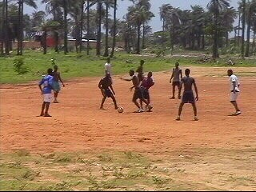

|
The Sonko Discovery Tour 2003 |
Van 19 tot 28 juli gingen we in Gambia op zoek
naar de roots van Edrissa Sonko! En dat terwijl
de andere toeristen in dit land op zoek gaan naar
de roots van Kunta Kinte. Het bord hierboven
staat op de grens met Senegal.
Senegal, waar deze foto is gemaakt ligt zeer
gevoelig bij de Gambianen omdat de supporters
bij de interland Senegal-Gambia met stenen
werden bekogeld en met messen gestoken. De
Senegalese ordehandhavers beschermden de
supporters niet maar schopten hen nog verder
de tribune af. Ook de spelers van Gambia werden
bedreigd.
Het hele land is voetbalgek. Deze aspiranten
trainen langs het strand.

Overal waar maar een veldje is wordt gevoetbald.
In het regenseizoen ligt de competitie stil maar
worden er alternatieve competities gespeeld
zoals hier. Gras heeft men niet.
De lijnen worden in het zand getrokken.
De keeper van het oranje team.
Links op de foto zit Big Pa, de voorzitter van de
grootste Sonko fanclub van Gambia. De foto is
gemaakt in een van de minder frisse wijken van
Bakau waar Sonko woonde voordat hij naar
Europa verkaste. Dit is de kamer van Edrissa!
Temidden van de compounds, woongemeen-
schappen die opgetrokken zijn uit golfplaten en
leem, staat het Sonko-muurtje.
De mensen zijn uitzinnig van vreugde dat er fans
uit Nederland komen.

Iedereen wil op de foto. Let op het
shirtje van het meisje.
Twee "toubabs" tussen de locals. Een feest!

Dankzij de connecties van Big Pa mogen we het
enige stadion van Gambia betreden. Het ligt in
Bakau waar Sonko gewoond en gespeeld heeft.
De capaciteit is 20.000 toeschouwers.
Dit is de vice-president van de National Gambian
Football Organisation.
Nog twee belangrijke personen. De rechtse is
als ik me het goed herinner hoofd jeugdopleiding.
Een leuke fotocollage in de directiekamer.

Twee jonge Sonko-fans op de veerboot van Banjul
naar Barra. Toen wij hen wat snoepjes en ballonnen
gaven maakten ze een tekening voor ons van
Edrissa Sonko.
De veerboot is trouwens een Nederlanse boot!
Na een lange zanderige trip keren we terug naar
Essau, het geboortedorp van Sonko.
Een oude man wijst ons de weg naar het huis van
de familie Sonko. Hier mogen we zowaar naar
binnen. Op de foto de trotse grootmoeder van
Edrissa.
Er worden stoelen buitengezet en de mooiste
hoofddoek wordt tevoorschijn gehaald. De dames
links en rechts op de foto zijn zussen van Edrissa.
Men woont hier in het algemeen met hele families
bijelkaar. Hier woont Sonko als hij in Gambia
verblijft. De speler is hier zo populair is dat hij
absoluut niet alleen over straat kan. Mensen
huilen als ze hem weerzien.
Iedereen hoopt dat Sonko in oktober kan spelen
voor Gambia in de interland tegen het momenteel
onveilige Liberia. Sonko is de absolute voetbal-
god voor de Gambianen maar ook Ceesay en
Sillah alsmede een Gambiaan die in Zweden keept
zijn zeer populair.
Een dag voor ons vertrek zijn we uitgenodigd in
restaurant-bar Bananas waarvan Big Pa de
eigenaar is. De belangrijkste leden van de fanclub
zijn opgetrommeld om ons te ontmoeten en iets
over zichzelf te vertellen. Ook wij moeten uitvoerig
vertellen over Roda en over Sonko.
Ter ere van ons wordt een feestmaal aangericht.
Onze kokkin bereidde rijst met barracuda, cassave,
en diverse groenten en sausjes waarvan ik niet
weet wat het was. Wij mochten als eerste ons bord
opscheppen, maar daarvoor moesten we nog even
samen met iedereen bidden. Je moet de handpalmen
tegen elkaar houden, iets prevelen en daarna door
je gezicht wrijven.
Het smaakte goed en we hadden er gelukkig een
koel flesje Julbrew bij want de vochtige hitte is in
het regenseizoen hier bijna niet te dragen.
Als afscheid een groepsfoto met een aantal leden
van de Sonko-fanclub! Een van hun zal woensdag
naar Nederland komen.